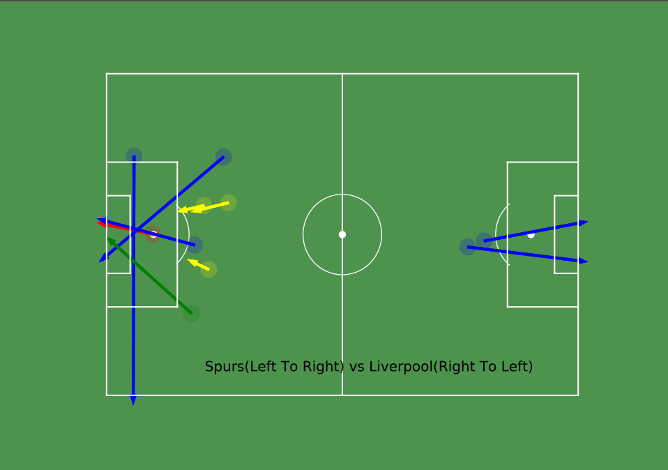
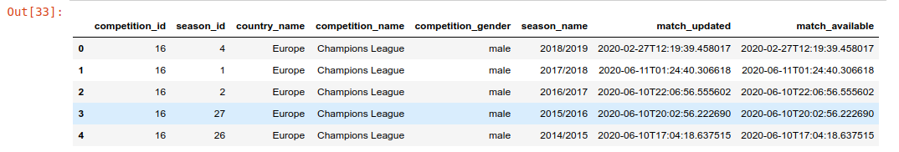

Shot Visualization of Spurs vs Liverpool UCL Final Using Python
Eng goal :
-
This is what we want to achieve at the end of this article:
-
Colors for shot type:
- goal : red
- saved : green
- blocked : yellow
- yellow: wayward try

Data Source :
Note : The data has been provided freely by Statsbomb .For further information ,go to their website to read the user agreement and github page for the data:
- competitions - eg : UCL , worldcup , etc
- matches - take in competition id and see the matches of the required competition.
- events - take match id and visualize and analyze all the detailed events of every min (passes, shots,build up play,etc)
Tools Used :
- Python
- Matplotlib
- Pandas
- FcPython library (for creating football pitch)
Note: Check the end of the article for the link
Following is the goal of this post :
- Loading data into a table/dataframe.
- Filtering the data to extract location coordinates.
- Plotting a football pitch
- Setting the coordinates in the pitch to visualize the shots and its direction.
Let’s start :
- Let’s start by importing the required python libraries:
import json
import pandas as pd
import matplotlib.pyplot as plt
from FCPython import createPitch
- Next, we will need to load the data from the directory where we have saved and create a dataframe out of it (
competitions.json).
Note: Read statsbomb sites and github page for the use of the data as mentioned above.
# point to local directory of football data. (Change the location to your own)
BASE_DIR = '../statsbomb-data/open-data/data'
# Load the competition file .
# Create a dataframe of the json file
competitions_df = pd.read_json(BASE_DIR + '/competitions.json')
- This is how it looks in a dataframe:
# head() will give the first 5 row. competitions_df.head()
- Now, we can see the competition id for the required match
Spurs vs Liverpoolis 16.
# UEFA Champions League 2018/2019 has competition ID = 16
competition_id = 16
- Load the match
spurs vs lfcusing the competition id :
# Load spurs vs liverpool json file from the list of final matches(json) of Champions League.
matches = pd.read_json(BASE_DIR+'/matches/'+ str(competition_id)+'/4.json')
# Champions league final id : Spurs vs Liverpool
match_id = matches['match_id'][0]
- Next, Let’s define pitch parameters.
# Size of the pitch in yards. pitchLengthX = 120 pitchWidthY = 80Note: length = 120 yards , width = 80 yards (Statsbomb data default pitch unit is in yards.)
Defining our Required team:
home_team_required = "Liverpool"
away_team_required = "Tottenham Hotspur"
Loading in the full match events (Using the match_id we defined above)
# Load in all match events data.
spursVsLfc_match = str(match_id)+'.json'
# Creating a dataframe from the json above.
events_df = pd.read_json(BASE_DIR+'/events/'+spursVsLfc_match)
Columns in the
events_df= [‘id’, ‘index’, ‘period’, ‘timestamp’, ‘minute’, ‘second’, ‘type’, ‘possession’, ‘possession_team’, ‘play_pattern’, ‘team’, ‘duration’, ‘tactics’, ‘related_events’, ‘player’, ‘position’, ‘location’, ‘pass’, ‘carry’, ‘ball_receipt’, ‘under_pressure’, ‘duel’, ‘foul_committed’, ‘shot’, ‘goalkeeper’, ‘off_camera’, ‘clearance’, ‘foul_won’, ‘interception’, ‘ball_recovery’, ‘counterpress’, ‘out’, ‘dribble’, ‘50_50’, ‘substitution’, ‘block’, ‘shot_type’]
List of functions :
We will be using following functions to filter our data:
"""
Function for type of play: goal, pass,etc
"""
def get_shot_type(type_dict):
return type_dict.get('name')
def get_team_name(possession_team_dict):
return possession_team_dict.get('name')
def get_shot_end_location(shot_details_dict):
return shot_details_dict.get('end_location')
def get_shot_outcome(shot_details_dict):
return shot_details_dict.get('outcome')
def get_shot_type(shot_details_dict):
return shot_details_dict.get('type')
Lets start filtering the dataframe using the above functions:
First of all, create a new column and add the type of shot for each row. Then, take only those row which consists of shot_type = shot. Finally ,extract the shots in the first half only( Our goal of this article is to visualize only the shots in first half).
# unpacking type column for knowing type of play.
events_df['shot_type'] = events_df['type'].apply(get_shot_type)
total_shots_df = events_df[events_df['shot_type'] == 'Shot']
# All shots in first half of the game. period = 1 .. 2nd half means period = 2
first_half_shots = total_shots_df[total_shots_df['period'] == 1]
Perform following operation to check the dataframe table:
# will print the first 5 rows.
first_half_shots.head()
Now, We need following shot details:
- location of the shot
- end location of the shot
- team in possesion
- outcome of the shot
Here is how it is done:
# start location
shot_details_1st_df = pd.DataFrame(first_half_shots['location'])
# contains all the shot details like end location ,outcome and expected goal created by statsbomb.
shot_details_1st_df['shot_details'] = pd.DataFrame(first_half_shots['shot'])
# team in possesion
shot_details_1st_df['team'] = pd.DataFrame(first_half_shots['possession_team'].apply(get_team_name))
shot_details_1st_df['end_location'] = shot_details_1st_df['shot_details'].apply(get_shot_end_location)
shot_details_1st_df['outcome'] = shot_details_1st_df['shot_details'].apply(get_shot_outcome)
shot_details_1st_df['type'] = shot_details_1st_df['shot_details'].apply(get_shot_type)
Creating a Football pitch and Plotting data:
Now that we have filtered all the required data from the dataframe, let’s use FcPython library to create pitch and plot the data.
#Draw the pitch (Using FcPython library)
(fig,ax) = createPitch(pitchLengthX,pitchWidthY,'yards','white')
# Plot the shot
circleSize = 2
for i,row in shot_details_1st_df.iterrows():
x = row['location'][0] # shot taken x-axis
y = row['location'][1] # shot taken y-axis
dx = row['end_location'][0] - x
dy = row['end_location'][1] - y
## parameters for making the arrow
pass_x = 120 - row['end_location'][0]
pass_y = row['end_location'][1]
dx = ((pitchLengthX - x) - pass_x)
dy = y - pass_y
if row['outcome'].get('name') == 'Goal' :
color = "red"
goalIndex = i
elif row['outcome'].get('name') == 'Saved':
color = "green"
elif row['outcome'].get('name') == 'Blocked':
color = "yellow"
else:
color = "blue"
if row['team'] == home_team_required:
shotCircle = plt.Circle((pitchLengthX-x,y),circleSize,color = color)
shotCircle.set_alpha(.2)
passArrow = plt.arrow(pitchLengthX-x, y, -dx, -dy, width = 0.5 ,color = color)
elif row['team'] == away_team_required:
shotCircle = plt.Circle((x,pitchWidthY-y),circleSize,color = color)
shotCircle.set_alpha(.2)
passArrow = plt.arrow(x, pitchWidthY-y, dx, dy, width = 0.5 ,color = color)
ax.add_patch(shotCircle)
ax.set_facecolor('mediumseagreen')
ax.add_patch(passArrow)
plt.text(25, 6, 'Spurs(Left To Right) vs Liverpool(Right To Left)', fontsize=15)
fig.patch.set_facecolor('#006400')
fig.patch.set_alpha(0.7)
fig.set_size_inches(10, 7)
# savefig('figname.png', facecolor=fig.get_facecolor(), transparent=True)
fig.savefig('../Output/spursvslfc_ucl_final_1sthalf_goal.pdf',facecolor=fig.get_facecolor(), transparent=True,dpi=100)
plt.show()
Output screenshot:
Thank you for reading till the end !!! Any valuable feedback is welcomed.
If you are interested in learning how i managed to do all of the above analysis.Check the Credit section below.
Credits :
Thanks to the following amazing resources that was incredibly useful:
- Friend of Tracking youtube channel : Friends of Tracking
- Fc Python website : FC Python